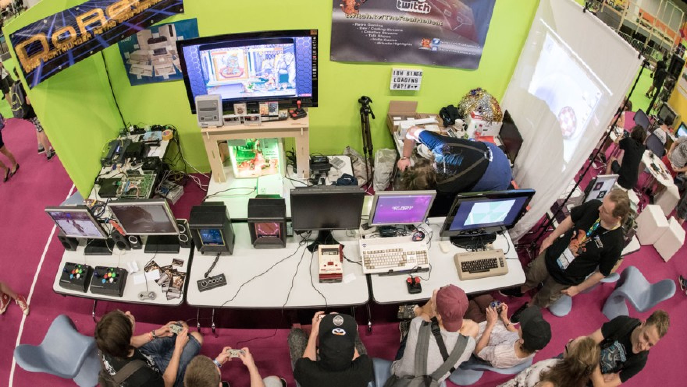

The Creation of Pimp My Container
I always felt atracted to the "Hard things" its really hypnotyze me.
As an example I always liked the NES games (And I'm actually continue play those games daily) or games made by From Software such as Dark Souls or Sekiro.
As developer I like GNU/Linux as my personal SO, I'm currently using a advanced user ditro, Arch Linux on servers I use Debian Stable and my favourites languages are Bash and C (I'm really interesed on create games with SDL library), also in my freetime I like to learn Assembler 6502 for creating NES and Atari 2600 games, I'm strongly interesed in learn Assembler intel 8080 for Gameboy classic games for this project I choose Bash, This is the hisotry behind this program

The inspiration for Pimp My Container
I was a Holberton School student, one of the tools provided to us was a custom container using docker for test purpouses without compromise the OS, all was transparent for the user You only had one sinlge button to create and connect to your container, but depends of the internet connection, and the container was destroyed after 24 hours losing all the stuff inside (A problem for some peers)
One day at the school we had internet connection issues, A peer need to use a custom docker container, but how without internet?, that begin to create in me an idea... Later, we had a hackaton, one member of our team create a custom docker container, but the others peers don't any knowledge about docker, so I start to develop a bash program to automate the connection of my container, you can check that initial baby program Here Pimp my container had born
So, We required to create a final project for Holberton, "This is my chance" I said, so I start to develop my bash program deeply with a lot of features and work hard at my home using docker and bash language with sed and awk to develop this program, the name was inspired on the old MTV Show "Pimp My Machine", the idea was create a program to automate the creation and connection to docker without any depedence of internet diferent to download the packages for the installation and creation of an image, but, once the image was built you can use everywhere, was stored on your computer and you also can upload to docker hub, the image was created with the requisites given by the user through some menus on the terminal such ruby, python, emacs, apache, etc.
The final deploy
I face many challenges developing the program such as docker don't handle exit status 1 while is building an image so I cant use "if" cases inside the built and had to learn how to use modular bash code using functions, and how to call a single function from a file with 2 or more bash functions inside, at 10% of my development my program had 800 lines of code, that was so hard to handle, for that reason I decide for working like python files structure.
Was so hard, I learned a lot, And finally develop a successful program very similar to holberton Intranet containers, but you can use it without internet administrate the docker service, run custom ports, personalize your container's name and push your built image to dockerhub and some features more!
You can found pimp my container source code and general repo Here
You can found all my portfolio Here and follow me on Github, Twitter and Linkedin